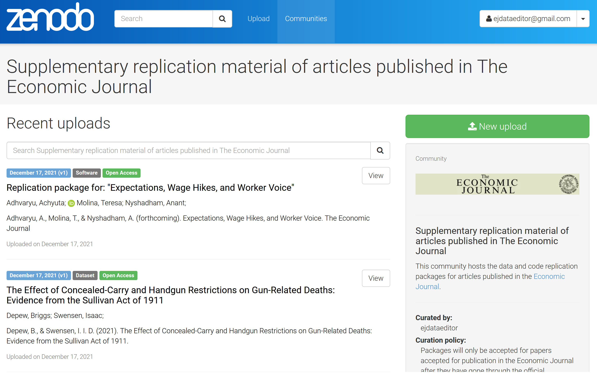
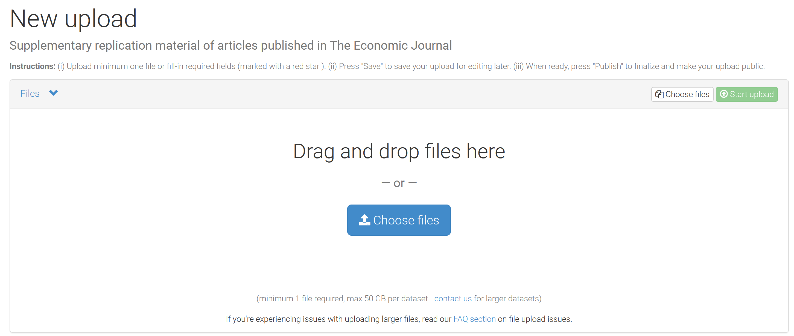
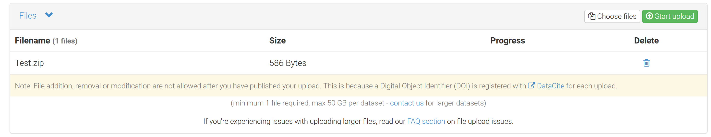
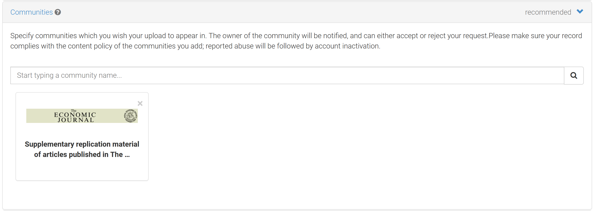
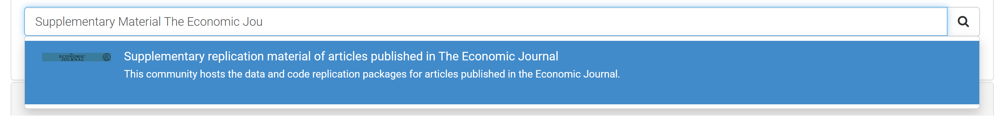
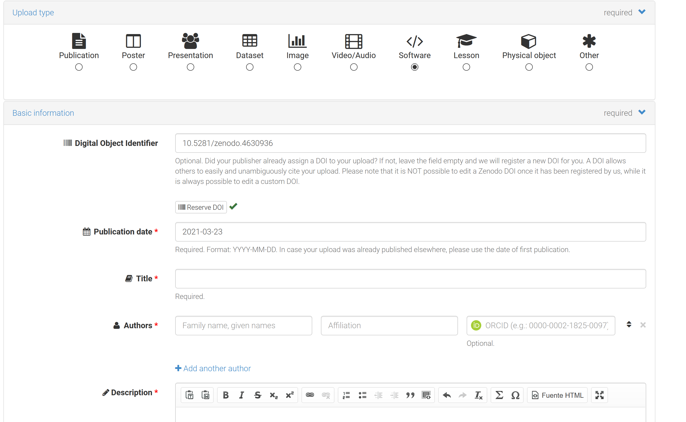
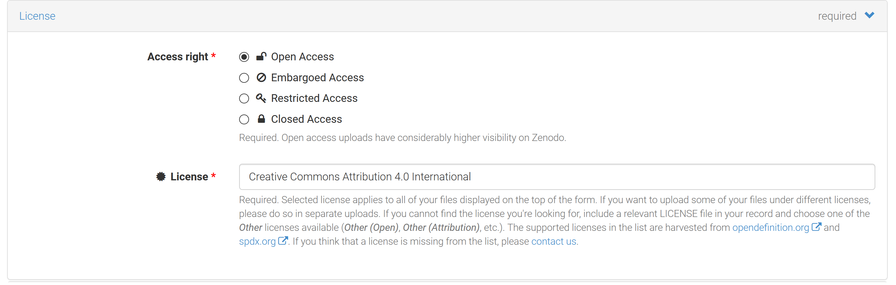
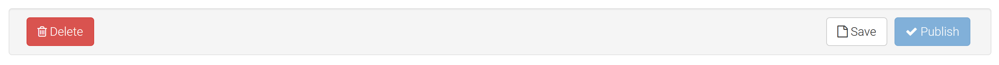
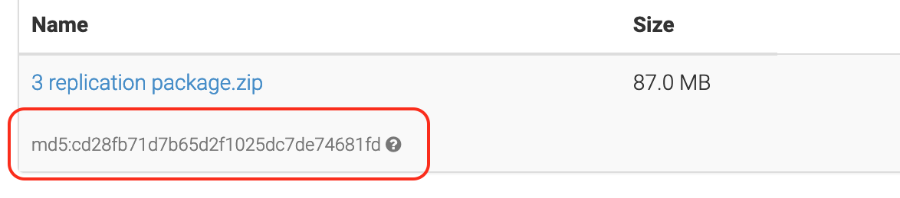

Prepare and Submit your Replication Package
After your Managing Editor conditionally accepts your paper (and before she sees your final response and proceeds to final acceptance) your paper will go through reproducibility and anti-plagiarism checks. Therefore, in your last re-submission you are requested to submit, via Editorial Express, your final files for production, your online appendices, and your replication package. It is important that you carefully follow the instructions below to ensure that your paper and your replication package are not mishandled. This page provides you with detailed information that will help you preparing your replication package. Read it carefully before you submit!
Preliminaries
You are requested to submit a single zip file with the following folder structure (please name your folders in this exact way! Notice there should be no spaces in folder names, and no capital letters). In short, the content of your zip file looks as follows:
├── 1-paper
├── 2-appendices
├── 3-replication-package.zip
└── 4-confidential-data-not-for-publication.zip (Optional)zip format!
- Both folder 3 and folder 4 are
ziparchives. - Only include folder 4 with restricted data if an exemption to the Data and Code Availability Policy has been granted to you and you are providing the replication team with temporary access to the data; all codes and unrestricted data should go to folder 3.
For folders 1 and 2, please refer to the Economic Journal’s General Instructions to Authors and Guide for Accepted Authors and carefully follow the instructions indicated there. In the lines below, you will find specific guidelines about folder 3 and, if you were granted a data exemption at the time of first submission (see here, here, and here for details), also folder 4.
Along with your package, you are requested to download, fill, sign and submit this checklist, which refers to the content of the package below
Contents of Replication Package
As indicated in the journal’s Data and Code Availability Policy all packages should include the following information:
- A
READMEfile in PDF format (README.pdf). We strongly recommend using this template. You may find in this web app a convenient tool to create yourREADMEfile. - The raw datasets used in the paper and online appendices, including a complete, transparent and precise documentation describing all variables. You can additionally provide the analysis data if this is helpful, but they are not required if the raw data are provided. If you were granted a data exemption at the time of first submission (see here, here, and here for details), you should either provide the replication team with temporary access to the data for the sole purpose of performing the reproducibility checks, or you should submit a synthetic/simulated dataset that allows running the code and produce all outputs in the paper and appendices, even if the results do not match those in the paper.
- Both the data cleaning codes and the analysis codes that produce all reproducible outputs reported in the article, appendix, and online appendices (including figures, tables, and numbers reported in the text). If some results are produced without scripts (e.g. ArcGIS maps), the
READMEfile should include step-by-step very detailed instructions on how to produce that output. In case of simulation/Monte Carlo studies, the authors are requested to set a seed so that the exact numbers that are reported can be obtained. - If data are provided in proprietary format (e.g. Stata’s
.dta), a copy of the data in non-proprietary format (e.g.ASCII,.csv).
Experimental papers should additionally include the following PDF documents (if these files are part of the paper or of an appendix, copy them again in a separate document and include them in the replication package):
- A document outlining the design of the experiment.
- A copy of the instructions given to participants, in both the original language and an English translation.
- Information on the selection and eligibility of participants.
- A PDF copy of the Institutional Review Board (IRB) approval of one of the authors’ institutions (IRB approval number, date, name of the institution) or an explicit mention that an exemption has been granted by the Editorial Board.
The README File
The README file should provide enough instructions so that all users (level of an advanced PhD student and above) can reproduce all the results in the paper in a reasonable amount of time and without problems. We strongly recommend using this template.You may find in this web app a convenient tool to create your README file. The minimum required information includes:
- A verbal description of the content of the package (datasets, programs, folders, etc.)
- Data Availability Statement: precise indications on how the data were obtained, including required registrations, memberships, application procedures, monetary cost, or other qualifications, and, if applicable, URL to download them (which is typically part of the data citation).
- Precise instructions on how to run the code.
- Indications on where each piece of output is saved or displayed. (See best practices below)
- Software requirements, including the software version and operating system used by the authors.
- All packages and libraries that need to be installed to run the code and a clear indication on how to obtain them.
- Expected running time (even if it is a few seconds). When relevant, include the hardware that the estimated time refers to.
- Data citations: all datasets used in the paper (with no exceptions) should be listed in the references section of the paper in the same way that we cite other papers, and a copy of these citations should appear in a dedicated section of the ReadMe file. You can find some examples in page 7 of this document.
Data Citations
All datasets used in the paper (with no exceptions) should be listed in the references section of the paper in the same way that we cite other papers, and a copy of these citations should appear in a dedicated section of the README file. You can find some examples in page 7 of this document.
If the data used in the study is part of the replication package of another paper, both the paper and the replication package should be cited.
Even commonly used datasets should be cited (in fact, funding of public and private institutions that make datasets available, even the most widely used ones, crucially depends on data citations!).
More specific guidance, and examples, on data citations is available here.
Best Practices
The Social Sciences Data Editors collaborate to establish a set of best practices for reproducibility packages. Please click here to consult our version of this list.
Submitting Your Package
Submit your final files and replication package via The EJ Editorial Express. If size permits, submit all files into one zip file. If necessary, you can split your zip file into multiple smaller size files - for example using this on windows or a version of this command on *nix systems:
# creates chunks of max 100MB
$ zip -r -s 100M split_package.zip replication-package/
$ ls -l split*
-rw-r--r-- 1 floswald staff 104857600 Jul 26 16:54 split_package.z01
-rw-r--r-- 1 floswald staff 104857600 Jul 26 16:54 split_package.z02
-rw-r--r-- 1 floswald staff 104857600 Jul 26 16:54 split_package.z03
-rw-r--r-- 1 floswald staff 104857600 Jul 26 16:54 split_package.z04
-rw-r--r-- 1 floswald staff 41394717 Jul 26 16:54 split_package.zip(notice that you would have to submit all file files in this case, also the .zip file)
If, even splitting zip files, the files are still too large for the Editorial Express platform, please arrange an alternative transfer method with the Data Editor at ejdataeditor@gmail.com.
If you were granted a data exemption at the time of first submission (see here, here, and here for details) , and you are allowed to provide the Data Editor and the replication team with temporary access to your restricted data for the sole purpose of the reproducibility checks, you should include the confidential data in a separate folder named 4-confidential-data-not-for-publication.
The content of this folder will be destroyed after the reproducibility checks are completed. All replicators and the Data Editor have signed confidentiality agreements that protect your submission.
If you can provide temporary access but not by sharing the data in the 4-confidential-data-not-for-publication folder, please contact the Data Editor at ejdataeditor@gmail.com to arrange an alternative access method.
A few days after you submitted the package (in most of the cases, within two weeks) you will be contacted by the Data Editor with the outcome of the reproducibility checks, regardless of whether the checks were successful or there are modifications to be made. Please add ejdataeditor@gmail.com and ej_foswald@editorialexpress.com to your safe contacts to avoid that the Data Editor’s messages go to spam!
If you need to implement modifications of your package, you will be instructed to do so in the Data Editor’s response. You will iterate with the Data Editor until the reproducibility checks are satisfactory concluded.
After the reproducibility checks are completed: publish your package!
Once the reproducibility checks are concluded, you will be requested to perform an additional step: publish your replication package at the Economic Journal’s community of Zenodo. To do so, you need to complete the following steps:
Sign up here for a free zenodo account, if you don’t have one already.
Go to the Economic Journal’s community of Zenodo at https://zenodo.org/communities/ej-replication-repository.
Start a new upload within the community using the top-right green button in the below figure. 
Upload the
zipcompressed version of your replication package (i.e. the exact same archive3-replication-package.zipyou sent us in your final iteration of the replication package). Drag-and-drop the zip file to upload it, as shown below. Make sure you only publish the replication package and not the paper or online appendices. Especially, do not publish the content of the4-confidential-data-not-for-publication.zipfolder! Click on the Start upload green button to upload.
If you didn’t skip step 2, your upload is already linked to the Economic Journal’s community. If your upload is not directly linked to the Economic Journal’s community, you can search the community on the search bar.
Fill the required metadata:
- Upload type: Software (or Dataset if you more applicable).
- Publication date: leave the default today’s date.
- Title: Replication package for: “{full title of your manuscript}”.
- Authors: Typically the same authors as the manuscript, but you can add others who have contributed significantly to the code you are uploading, such as research assistants (in that case, you are making them coauthors of your replication package, but not of the paper).
- Description: write a full citation to your manuscript as a description of what the replication package contains.
- Other optional metadata: don’t worry about this, you can leave it blank. 
Select an open-access license for your upload.
Save the “Digital Object Identifier” (DOI) issued by Zenodo (see the image above) and email it to the Editorial Office at ej@res.org.uk. This DOI will appear in your published paper, and will hence link your article and your package.
Save and then Publish using the corresponding buttons that appear both at the bottom and at the page.
Important Noteonce you press
publish, you will not be able to edit or delete your uploaded files. You can create new versions of your upload at any point in the future, but these versions will have a different DOI (they will be linked to your earlier and future versions of the package, but they will not be directly linked to your paper). Please double-check that you publish the files that went through the reproducibility checks, and that you are not publishing the content you submitted in the folder4-confidential-data-not-for-publication.zip.Send an email to the Data Editor which includes the
md5string displayed on the zenodo page of your replication package (see below). This string serves to check whether the files included in the package, which the Data Editor has accepted, are exactly identical to the ones you uploaded to zenodo. This string is like an electronic fingerprint of your replication package. It’s important to note that you must not modify your package after final acceptance in any way (add/remove files or make edits), or this check will fail. What you upload needs to be exactly identical (at the bit-level of the contained files) to what you sent us in your final iteration.